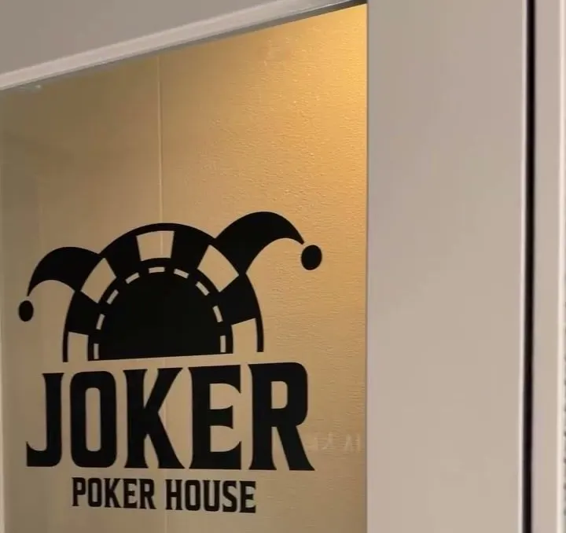
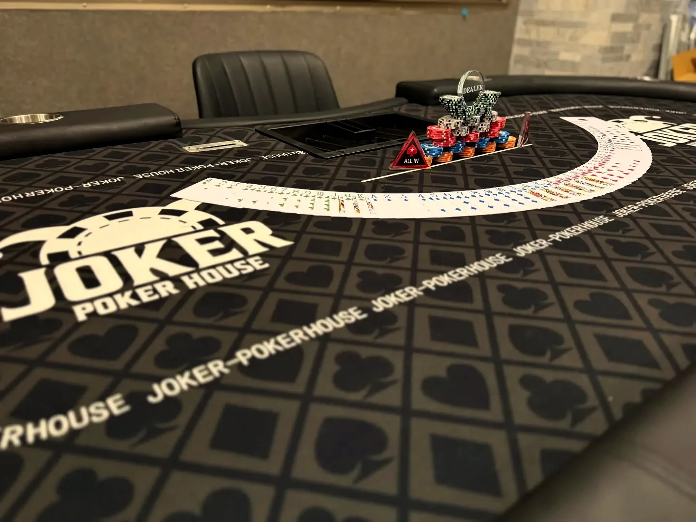
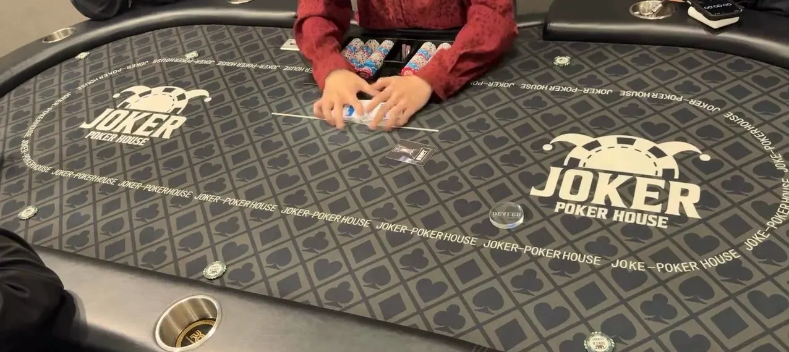
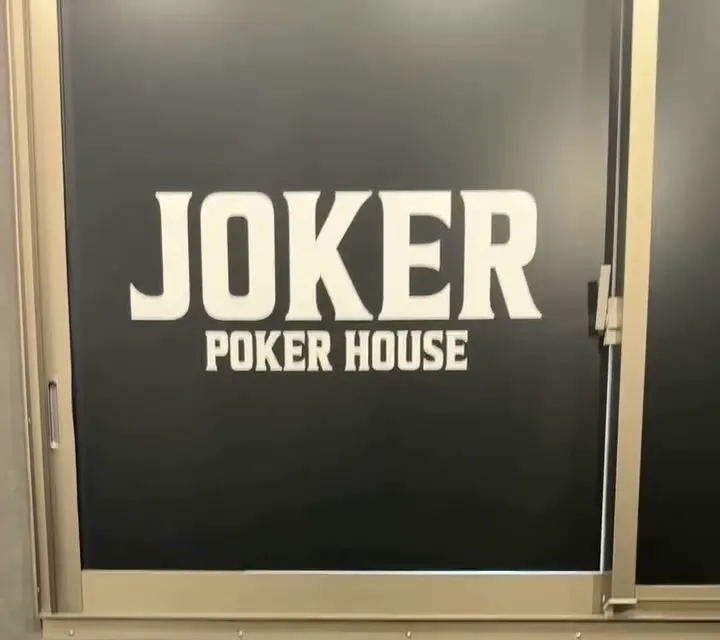
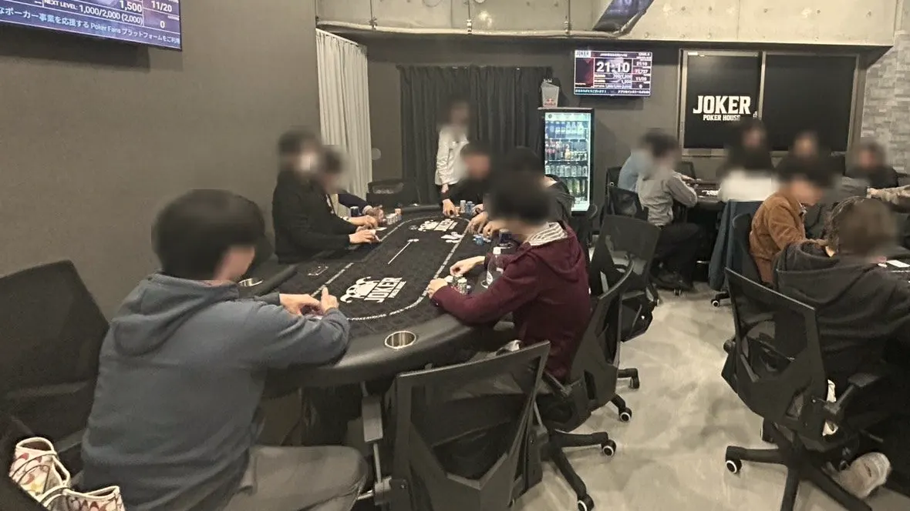
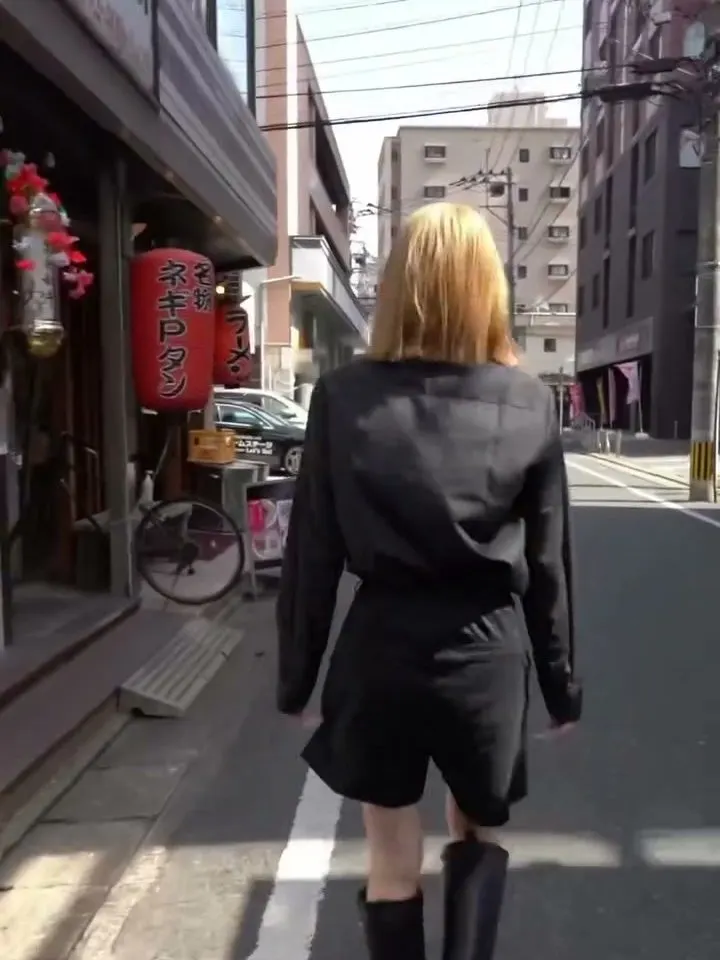

入場料
どちらも飲み放題つき
- ソフトドリンク
飲み放題付 - 1,000円
- アルコール
飲み放題付 - 2,000円
お酒の飲み放題は、20歳以上の方だけがご利用いただけます。

表記はすべて税込です。入場料には、ドリンクの飲み放題がついています。

どちらも飲み放題つき
お酒の飲み放題は、20歳以上の方だけがご利用いただけます。

毎日 15:00から。持ち点ごとの料金です
ブラインドは 100-200。100BB は、ビッグブラインド（200点）100個分のことです。

2026年11月時点の主な大会
当店はアミューズメント施設です。賞品の提供・チップの換金・持ち出し・預かりはありません。

ルールを知らなくても大丈夫です。来店から卓につくまで、スタッフがご案内します。
「はじめてです」と伝えてください。
手元のカードとチップを使って、スタッフがひとつずつお教えします。
慣れるまで、スタッフがそばでサポートします。
2026年11月時点の定番です。JOKER RING は毎日 15:00 から。予定は週ごとに変わるので、来る日のぶんは JOKER CLUB のスケジュールで確かめてください。
| 曜日 | 時間 | 内容 |
|---|---|---|
| 月 | 〜 | トーナメント |
| 火 | 〜 | フリーズアウト |
| 水 | 〜 | 初心者トナメ |
| 木 | 〜 | JOKER LEAGUE2026年10〜12月 |
| 金 | 〜 | トーナメント |
| 土 | 〜 | 昼トナメ |
| 〜 | トーナメント | |
| 日 | 〜 | 昼トナメ |
| 〜 | トーナメント |
受付カウンターとポーカーテーブル、順番を待つ間に座れるソファがあります。おひとりでのご来店も大歓迎です。

ラーメン屋さんの隣のマンションの2階です。
